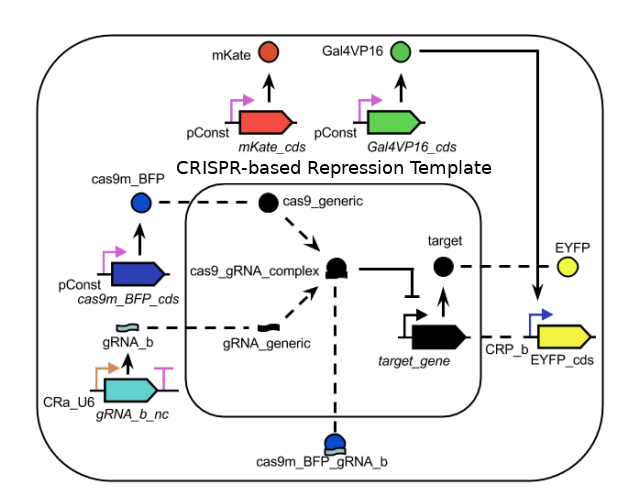

/* Welcome to the SBOL-JS Introductory Tutorial!
This interface is for learning the basics of how to use
the Javascript library for SBOL: SBOL-JS.
As a test case, the chapters on this page will contain some of the SBOL-JS code
that is needed to build the CRPb Characterisation Circuit shown below.
To fully complete the circuit, it is highly recommended you find
more detailed instructions here.
Simply click on Chapter 1 to start with, and then
use the terminal on the right to follow instructions!
*/